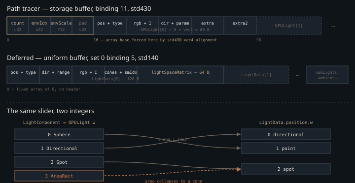

Monograph · Tree · ← Module hub · Lights dual packing
materials
Lights dual packing
GPULight SSBO (64) vs deferred LightData UBO (8).
The same integer means two different lights
A scene author sets one thing: a `LightComponent` whose `LightType` runs Sphere = 0, Directional = 1, Spot = 2, AreaRect = 3.
Sphere = 0, // point light with radius (soft shadows)ohao/scene/component/light_component.hpp:11Neither light buffer ends up holding only those. Both pipelines also synthesise one light per actor whose material carries an emissive texture — the ray-traced side stamps it in as a sphere at the mesh centre, the deferred side as a point light — so every count on this page is scene lights plus emissive stand-ins:
gl.positionAndType = glm::vec4(center, 0.0f); // sphere typeohao/gpu/vulkan/light_upload.cpp:230light.position = glm::vec4(center, 1.0f); // type 1 = point lightohao/gpu/vulkan/buffer_setup.cpp:473The path tracer takes the component enum unmodified — the value is cast straight to float and dropped into `positionAndType.w`:
gl.positionAndType = glm::vec4(pos, static_cast<float>(lc->getLightType()));ohao/gpu/vulkan/light_upload.cpp:163The deferred pipeline does not. Its `LightData` uses the classic raster convention, 0 = directional, 1 = point, 2 = spot:
alignas(16) glm::vec4 position; // xyz = position, w = type (0=dir, 1=point, 2=spot)ohao/gpu/vulkan/renderer.hpp:77so `updateLightBuffer` swaps 0 and 1 on the way in. The remap is a single nested ternary, and it is written out verbatim in both overloads of the function — the immediate upload and the per-frame one — which is why it has no line of its own to cite:
int deferredType = (lightComp->getLightType() == LightType::Sphere) ? 1 : (lightComp->getLightType() == LightType::Directional) ? 0 : 2;AreaRect = 3 has no raster equivalent, so the else-arm sends it to 2, and the deferred lighting loop treats the rectangle as a cone — attenuated by the component's cone angles, 30° and 45° on a default-constructed `LightComponent`, which nobody authoring an area light ever set:
attenuation *= calculateSpotAttenuation(L, normalize(light.direction.xyz),shaders/core/deferred_lighting.frag:240Those two numbers do not come from where you would look for them. `LightComponent` declares default member initialisers of 15° and 30°, and its one constructor's initialiser list overrides them with 30° and 45°, along with the header's intensity and range. Only the members that list omits — `radius` and the area edges — keep the advertised defaults:
, innerConeAngle(30.0f)ohao/scene/component/light_component.cpp:13The two overloads are not the maintenance risk the duplicated block suggests; they are already the maintenance bug. The packing block is byte-identical, but a dozen lines below it the no-light fallbacks have diverged: the immediate path installs a warm default sun whose intensity is $\pi$, cancelling the diffuse BRDF's $1/\pi$, while the per-frame path installs a white one at intensity 1. An unlit scene is roughly $\pi$ times brighter through one than through the other, and which one you get depends on the render path: `renderDeferred` and `renderLegacy` call the immediate overload, `renderMultiFrame` calls the per-frame one:
defaultLight.color = glm::vec4(1.0f, 0.98f, 0.95f, glm::pi<float>());ohao/gpu/vulkan/buffer_setup.cpp:319defaultLight.color = glm::vec4(1.0f, 1.0f, 1.0f, 1.0f);ohao/gpu/vulkan/buffer_setup.cpp:407
`positionAndType.w` carries the LightComponent enum; `LightData.position.w` does not. Read either code with the other table in hand and every sphere light becomes a sun. Area lights exist only on the ray-traced side.
Eighty bytes and one hundred twenty-eight
The ray-traced pack is the small one. `GPULight` is five `vec4`s, std430, with a static assert pinning the size so a stray member cannot silently desynchronise it from the GLSL mirror:
// 5 vec4s = 80 bytes per light, std430 layoutohao/render/rt/gpu_light.hpp:9`LightData` is 128 bytes, and 64 of those are a per-light shadow matrix the path tracer has no use for — it traces the shadow ray instead of projecting into a map:
alignas(16) glm::mat4 lightSpaceMatrix; // Transform to light space for shadow mapping (64 bytes)ohao/gpu/vulkan/renderer.hpp:81The capacity story inverts too. The deferred UBO is a fixed array of `MAX_LIGHTS = 8`, and both loops that fill it — scene `LightComponent`s first, then the cached emissive stand-ins — `break` once it is full, so light nine is silently dropped and an emissive mesh can eat the slot a hand-placed light wanted:
LightData lights[MAX_LIGHTS];ohao/gpu/vulkan/renderer.hpp:95The RT side declares a cap of 64 that nothing anywhere reads — the SSBO is sized from the collected vector at upload time, so the real limit is device memory, not the constant:
static constexpr uint32_t MAX_GPU_LIGHTS = 64;ohao/render/rt/gpu_light.hpp:19VkDeviceSize bufSize = lightDataOffset + gpuLights.size() * sizeof(GPULight);ohao/gpu/vulkan/light_upload.cpp:258The obvious alternative is one union struct feeding both pipelines, and the byte counts say why it was not taken: a shared layout drags the 64-byte shadow matrix into a buffer the raygen re-reads once per next-event sample, and drags area edges and a sampling radius into a uniform buffer whose eight slots are the scarcest resource in the deferred pass. Two packs cost a remap function. One pack costs bandwidth in the hot loop of both pipelines.
The sixteen bytes std430 hands over
`GPULight` has `vec4` alignment, so std430 rounds the array base of any buffer that begins with a `uint` counter up to 16 regardless. The upload spends eight of those twelve leftover bytes — the bindless environment-map index at offset 4, an HDRI intensity scale at offset 8 — and leaves the last four as true padding, holding whatever the header fill left there:
VkDeviceSize lightDataOffset = 16; // align GPULight array to 16 bytesohao/gpu/vulkan/light_upload.cpp:257The header is cleared to all-ones first, which makes the environment-map slot read `0xFFFFFFFF` — the sentinel the miss shader tests for "no HDRI" — before the real count is written over the first four bytes and the intensity scale over the third word:
memset(mapped, 0xFF, 16); // init header to 0xFFFFFFFF (no env map by default)ohao/gpu/vulkan/light_upload.cpp:276memcpy(static_cast<uint8_t*>(mapped) + 8, &m_envIntensityScale, sizeof(float));ohao/gpu/vulkan/light_upload.cpp:282Binding 11 is declared four times across the ray-tracing stages, in two shapes. All three raygen shaders name only `lightCount` and let std430 alignment skip the rest of the header. `pt_miss.rmiss` spells the header out in full — `lightCount`, `envMapTexIdx`, `envIntensity`, then a `uint _pad` it never reads — because it is the stage that samples the environment, and it needs the third word as much as the second: the index selects the HDRI, the scale multiplies it.
float envIntensity; // HDRI scale (default 1.0; inverse/relight)shaders/rt/pt_miss.rmiss:29payload.color = texture(textures[nonuniformEXT(lightBuf.envMapTexIdx)], uv).rgb * envS;shaders/rt/pt_miss.rmiss:66That side channel creates the sharpest ordering constraint on the page. `uploadLightBuffer` destroys and reallocates the buffer on every call, so nothing in the header survives a re-upload; even when the HDR reload is skipped because the path is unchanged, both the index and the intensity scale have to be stamped back into the fresh header, or the scene loses its sky the moment a light moves:
// allocated light buffer (header is memset to 0xFF each upload).ohao/gpu/vulkan/light_upload.cpp:289Radiance divided by a sphere the light may not be
`dirAndParam.w` is overloaded: the packer fills it with the sphere radius, then, two lines later, overwrites it with the inner cone angle in degrees when the type is Spot.
float dirParam = lc->getRadius();ohao/gpu/vulkan/light_upload.cpp:165The bounce-0 next-event-estimation block of the default `pt_raygen.rgen` converts intensity to radiance *before* it branches on type, using the surface area of a sphere of that radius:
// ==== Analytic direct NEE at bounce 0 ====shaders/rt/pt_raygen.rgen:304Write $c$ and $I$ for the packed colour and intensity, $r=\max(\texttt{dirAndParam.w},0.01)$, $d$ for the distance from the shading point to the sampled light point, $\theta_\ell$ for the angle at the light between its normal and the incoming direction, $s$ for the clamped spot cone falloff, and $A$ for the rectangle area in `extra2.w`. The block forms $L_e = cI/\max(4\pi r^2, 0.01)$ once, then each branch multiplies by its own geometric weight, giving
for sphere, directional, spot and area respectively. The $4\pi r^2$ reappears inside the sphere and spot weights and cancels, which is why growing a sphere light softens its shadow without brightening it. It does not cancel for the other two: a directional light's brightness and a rect light's brightness both scale as $1/r^2$ in a radius that means nothing for either shape. The radius is one of the members the constructor leaves alone, so it really is 0.5 by default, which makes the divisor $4\pi r^2$ exactly $\pi$ — so out of the box both shapes are quietly *darkened* by $1/\pi$:
float radius = 0.5f;ohao/scene/component/light_component.hpp:86The spot branch is worse than a scale factor. It reads `dirAndParam.w` twice in the same block — once through `cos(radians(...))` as an angle, which is correct, and once unconverted as the radius of the sphere it jitters the sampled light point over. The C++ struct is the only place in the tree where both meanings are written down. `pt_raygen.rgen` and `pt_raygen_offline.rgen` copy the comment but keep only the `sphere:radius` half; `pt_raygen_realtime.rgen` carries no member comments at all. Anyone reading a shader alone sees one meaning:
glm::vec4 dirAndParam; // xyz=direction, w=param (sphere:radius, spot:innerAngle)ohao/render/rt/gpu_light.hpp:13vec4 dirAndParam; // xyz=direction, w=param (sphere:radius)shaders/rt/pt_raygen.rgen:21vec4 dirAndParam;shaders/rt/pt_raygen_realtime.rgen:50A default-constructed spot, inner cone 30°, therefore has its sample point scattered over a sphere of radius 30 world units, so its direction and its shadow ray are close to meaningless. Sphere, directional and area lights do not share the fault — but every raygen does. The same clamp-then-jitter pairing sits in each next-event block of all three: three in `pt_raygen.rgen`, three in `pt_raygen_offline.rgen`, four in `pt_raygen_realtime.rgen`.
One light per shadow ray, and the factor that pays for it
Each next-event sample picks a single light uniformly rather than looping over all of them. With $N_\ell$ entries in the buffer — scene lights plus the synthesised emissive ones — the selection density is $p(\ell)=1/N_\ell$, and an unbiased estimator divides by it, so the contribution is multiplied by the light count:
where $f_r$ is the Cook-Torrance value evaluated inline in the same block and $\theta_s$ is the angle at the shading point. That `* float(lightBuf.lightCount)` is the visible half of the division:
vec3 directContribution = Le * (diff + spec) * NdotL * weight * float(lightBuf.lightCount);shaders/rt/pt_raygen.rgen:414The whole decode-and-sample block appears three times in `pt_raygen.rgen` — once at the primary hit and once inside each of the two indirect bounce paths, where the identical expression is pre-multiplied by that path's specular or diffuse throughput. It was then copied wholesale into the two profile raygens: three more blocks in `pt_raygen_offline.rgen`, four in `pt_raygen_realtime.rgen`. Neither file is dead — both are bound by a live render profile:
"bin/shaders/rt_pt_raygen_offline.rgen.spv",ohao/render/rt/rt_profile_renderer.hpp:220"bin/shaders/rt_pt_raygen_realtime.rgen.spv",ohao/render/rt/rt_profile_renderer.hpp:205The ten copies are not clones — the realtime sphere branch has since been replaced with solid-angle sampling, and the offline block's primary hit wraps the diffuse `NdotL` with a subsurface term the specular half does not get — but the header decode, the type dispatch and the `dirAndParam.w` overload are the same in all of them. A light-layout change lands in ten places across three files.
The shadow ray uses the sampled point's distance, not the light's radius, as `Tmax`, and the three positional branches shorten it by 0.02 so the ray stops just short of the light's own geometry; the origin is pushed 0.01 along the shading normal and `Tmin` is 0.001:
hitPos + N * 0.01, 0.001, L, shadowDist, 0);shaders/rt/pt_raygen.rgen:392Directional lights get a hard-coded `Tmax` of 10000 instead, which is a scene-scale assumption rather than a computed bound.
The include that nothing includes
`shaders/includes/lighting/light_types.glsl` defines the `LIGHT_*` constants, a `LightParams` struct, direction and distance extractors, and an ambient helper. No file in `shaders/` or `ohao/` includes it. Its formulas still ship, though, written out by hand: `forward.frag` branches on identically-named macros pulled from `includes/common/types.glsl`, and `deferred_lighting.frag` inlines the same direction selection and the same `ambient * albedo * ao` product with bare integer literals. Unused file, live math.
The header is not merely redundant, it is a trap: its `LIGHT_POINT` is 1, and 1 is *directional* in the `GPULight` table this page opened with.
#define LIGHT_POINT 1shaders/includes/lighting/light_types.glsl:23Including it into a ray-tracing stage to avoid retyping three constants inverts the two most common light types in the engine.
Contracts
- The environment-map index at byte 4 and the intensity scale at byte 8 die with the buffer on every `uploadLightBuffer`. Both must be re-stamped after the reallocation even when the HDR is not reloaded, or the sky goes black on the next light edit.
- `positionAndType.w` is the raw `LightType`; `LightData.position.w` is the remapped raster code. Anything reading a light type must know which buffer it came from.
- `dirAndParam.w` means radius for sphere/directional/area and inner cone angle in degrees for spot. Every spot branch in all three raygens reads both meanings; only the angle reading is correct.
- Both buffers are filled from `LightComponent`s *and* from lights synthesised per emissive-textured actor. `lightCount` — and therefore the estimator's $N_\ell$ — counts both, and the deferred eight-slot budget is shared between them.
- The deferred UBO holds exactly eight lights and drops the rest without warning; the RT SSBO is sized at upload and ignores its own `MAX_GPU_LIGHTS = 64`.
- The estimator multiplies by `lightCount` because it selects one light uniformly. Replacing uniform selection with importance sampling means replacing that factor with the real inverse density.
- The two `updateLightBuffer` overloads must be edited together. They already disagree on the no-light fallback, so a scene with zero `LightComponent`s renders at different brightness through `renderMultiFrame` than through `renderDeferred`.
Source files
ohao/scene/component/light_component.hppohao/gpu/vulkan/light_upload.cppohao/gpu/vulkan/buffer_setup.cppohao/gpu/vulkan/renderer.hppshaders/core/deferred_lighting.fragohao/scene/component/light_component.cppohao/render/rt/gpu_light.hppshaders/rt/pt_miss.rmissshaders/rt/pt_raygen.rgenshaders/rt/pt_raygen_realtime.rgenohao/render/rt/rt_profile_renderer.hppshaders/includes/lighting/light_types.glslParent hub for the full pipeline narrative; this page is the file-level design unit. Sitemap · hover glossary terms anywhere.